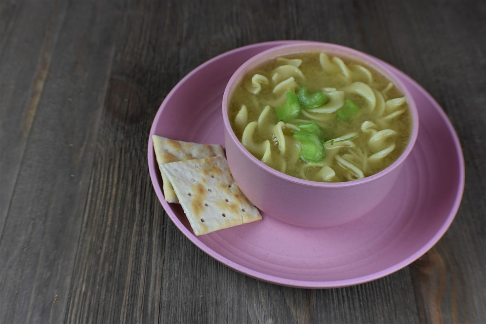

Sopas (Chicken Nooodle Soup)

There is nothing like having a bowl of hot Creamy Chicken Sopas to make
you feel warm and comfy on a cold day, especially during this time when
the temperature outside starts to get chilly. This recipe should be able
to help you cook a delicious sopas that you can serve to the entire family.
Ingredients:
- 12 oz. chicken breasts boneless
- ½ piece cabbage sliced
- 3 stalks celery chopped
- 1 piece onion diced
- 3 pieces hotdog sliced
- ¾ cups carrots diced
- 12 oz. evaporated milk
- 2 teaspoons minced garlic
- 1 piece Knorr Chicken Cube
- 6 to 8 cups water
- 3 tablespoons cooking oil
- 1 ½ cups elbow macaroni
- Salt and ground black pepper to taste
Steps:
- Boil 3 cups water in a medium pot. Add the chicken breasts.
- Cover and cook in medium heat for 15 to 18 minutes. You may add more water if needed.
- Separate the chicken from the water. Let the chicken cool down and then shred. Set both shredded chicken and water aside.
- Heat oil in a large soup pot. Sauté the garlic until it turns medium brown. Add onion, celery, and carrot. Continue to sauté for 2 to 3 minutes.
- Add the shredded chicken. Stir and cook for 1 minute.
- Add the hot dog. Quickly stir and then pour the water used to boil the chicken. Also pour the remaining water. Let boil.
- Add the Knorr Chicken Cube. Stir. Cover and cook for 3 to 5 minutes.
- Put the elbow macaroni in the pot. Cook for 10 minutes.
- Add the cabbage. Stir and cook for 3 to 5 minutes. Note: you can add more water if needed.
- Pour the evaporated milk. Stir, let boil, cover and cook for another 3 minutes.
- Add salt and ground black pepper to taste.
- Transfer to a serving bowl. Serve.
- Share and enjoy!
Back to Index